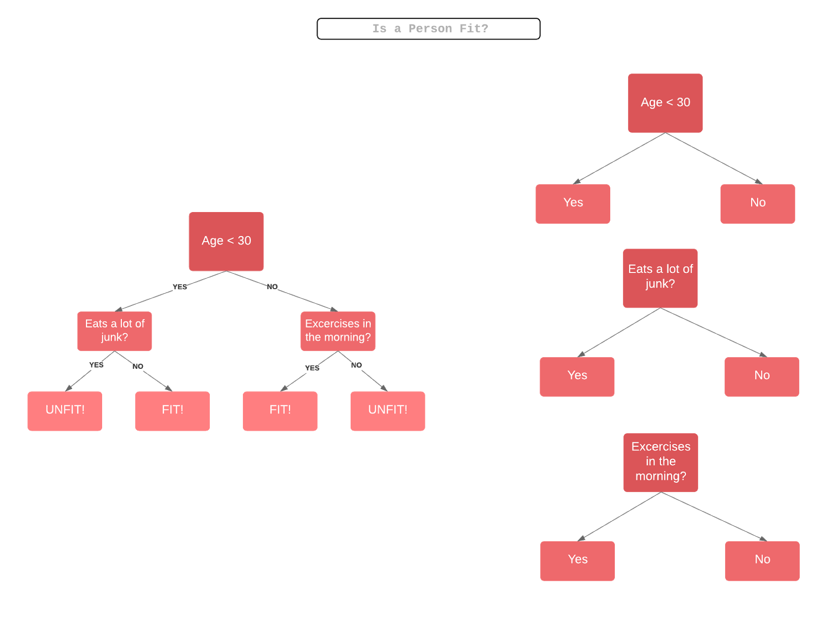
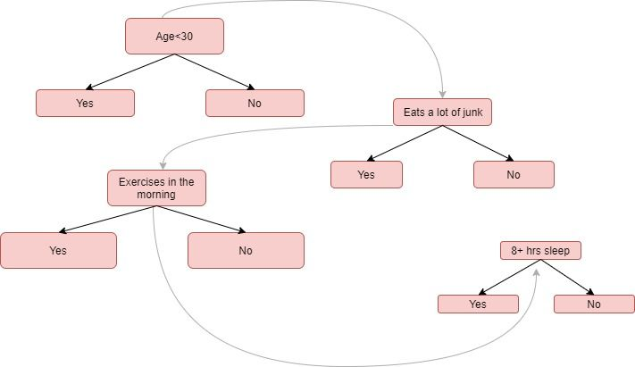
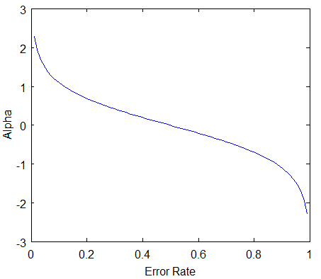

概述
Ensemble Learning:
集成学习(或者是组合学习)，将多个基础的算法相结合，构造成一个优化的预测模型。
为什么需要集成学习:
1.减少变量
2.减少偏置
3.提高预测性能
集成学习被分为了两个类型:
- 顺序学习，通过依次生成不同的模型，之前模型的错误被后来的模型学习，利用模型之间的依赖性，使得错误标记有更大的权重。
例如:AdaBoost
2.并行学习，并行产生基本的模型，这通过平均错误来利用了模型的独立性。
例如:Random Forest 随机森林
集成方法中的Boosting
例如人类从错误中学习，并且尝试将来不再犯同样的错误，Boost算法尝试从多个弱分类器的错误中建立一个更强的学习预测模型。
你一开始从训练数据中建立一个模型，
然后你从上一个模型中建立第二个模型通过尝试从减少上一个模型的误差。
模型被顺序增加，每一个都修改它的前面一个模型，知道训练数据被完美的预测或者增加了最大数量的模型。
Boosting基本上是试图减少模型无法识别数据中的相关趋势的时候所引起的偏差。这是通过评估预测数据和实际数据的差值所实现的。
Boost算法的类别:
1.AdaBoost(Adaptive Boosting)
2.Gradient Tree Boosting
3.XGBoost
我们主要注意AdaBoost中的细节，这个是Boost算法中最流行的算法。
单个分类器也许无法正确预测每个对象的类别，但是当我们将多个弱分类器组合到一起，每个分类器从其他分类器中分类错误的对象中进行学习，我们可以构建一个强模型，弱分类器可以是任何基本分类器，从决策树到Logistic回归等。
那么什么是弱分类器？
弱分类器的性能优于随机猜测，但是在指定对象的类中表现不佳，例如，较弱的分类器可以预测40岁以上的每个人都无法参加马拉松比赛，但是低于40岁的人可以参加马拉松比赛，也许就会有60%以上的准确度，但是仍然会有许多数据点误分。
AdaBoost不仅仅可以作为模型本身使用，还可以应用在任何分类器之上，从其缺点中学习并且提出更加准确的模型。因此可以称为最佳现成分类器。
那么开始了解AdaBoost是如何和决策树桩一起使用，决策树桩就像随机森林中的数目，但不是完全生长的，它有一个节点和两个叶子，AdaBoost使用了这样的树桩森林，而不是树。
单靠树桩并不是做出决定的好方法。一棵成熟的树结合了所有变量的决策以预测目标值。另一方面，树桩只能使用一个变量来做出决定。让我们通过查看几个变量来确定一个人是否“健康”（身体健康），来逐步了解AdaBoost算法的幕后知识。
例子:
STEP1:
一个弱分类，基于加权的样本，样本的权重表示正确分类的重要性，对于第一个弱分类，我们给所有样本同样的权重。
STEP2:
我们为每一个变量创造一个决策树桩，并查看每一个树桩分类的结果，例如，我们检查了年龄、吃垃圾食物和锻炼。我们将看每个树桩将多少样本正确分类。
STEP3:
我们将更多的权重分配给分类错误的样本，以便在下一个决策树桩中对样本进行正确的分类，权重还会根据每个分类器的准确性分配给每个分类器，高精度的分类器就有更好的权重。
STEP4:
第二步重复进行，直到所有数据点都正确分类。


下面是数学方面的表示:
首先是数据集:
其中:
n:数字的维度，或者说是数据集的特征数
x:数据点的集合
y:目标变量为-1和1,当为二分类问题的时候
那么，每个样本的权重，如何计算?
一开始的时候，每个样本的权重都相同，为1/N
其中:N为数据点的总数
这使得加权的样本和为1
之后，计算分类器的影响力，通过下面的公式:
Total Error就是错误分类的数目，那么关系如下图所示:

记住，当分类器表现好的时候，影响力大，当0.5的时候为0,当非常不好的时候，为负数。
之后，样本的权重呢?
总结:
AdaBoost的好坏:
优点：
比SVM简单好用，不需要调整参数
AdaBoost不会倾向于过拟合
提高了弱分类器的准确性，使其更加灵活
缺点：
需要有高质量的数据，对噪声敏感